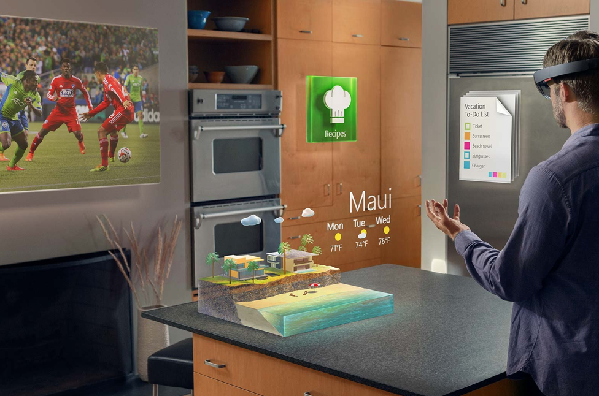
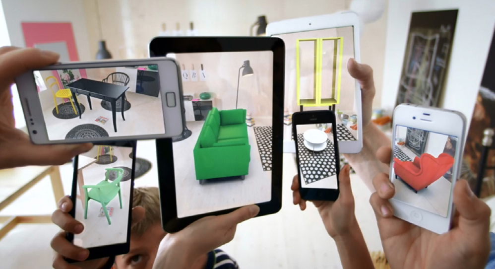

Augmented reality is “a technology that superimposes a computer-generated image on a user's view of the real world, thus providing a composite view,” as described by the Oxford Dictionary. In essence, it is a combination of the real world with the
digital world (images, video, sound, enhanced backgrounds, etc) represented with some kind of technology. For example, one can experience events from games incorporated into the user’s surroundings in the real world. Overall, there are many benefits
as well as threats, uses, and technologies (e.g. devices, applications, softwares, etc) with augmented reality.

Current Available Technologies
Smartphone application, hand-held video game consoles, and headsets/glasses are few of the technologies that can be named in which they use augmented reality. Smartphones have available apps (applications) that use AR and one of them include Pokemon
Go. Pokemon Go uses augmented reality since it combines computer generated characters with real world objects and surroundings. Another popular application is Snapchat. Snapchat represents as a technology with augmented reality because it shows
filters and animations on the user(s). Google translate is also utilized ar because the user can take a picture of a text in real life and that text can be translated into another language.
Applications aren't the only technologies that have utilized augmented reality. Google glass uses directions and computer generated images in front of your eyes combined with what you’re seeing. Even though google glass might be unpopular now, it
still exists and it is one of the many glasses that use ar. Other glasses such as the Microsoft Hololens are available today and it has the same concept as the google glass which is putting certain events in front of your sight such as your running
time/distance if you’re exercising, directions if you're going to another destination, or even internet searches. The Microsoft Hololens….
Moreover, augmented reality is used by some of the hand held video game consoles, The PS Vita is an example of this as a videogame can be played with the user’s surroundings. Depending on the game, it can even change to the surroundings. This is
done by having numerous external sensory and a front/back camera to put the game with the area of space the user is in.
Many current technologies use augmented reality and it is growing/developed more and more as the years past. From software technologies to hardware technologies, ar is being used for endless possibilities combining the digital world with the real
world.

Uses
Current
Companies like IKEA have used augmented reality to test whether or not furniture products would fit into certain homes.
Excavation crews have a big issue when trying to add and replace pipeline, since they are usually unaware of existing pipelines.
AR has been used to see a virtual display of these pipelines, saving millions of dollars.
AR can be used to enhance the abilities of those participating in recreational activities. Using current AR technologies,
football players can track the path a football is thrown in, allowing them to react accordingly. Also, these players are warned when
another player is coming in for a tackle by their AR device, allowing them to again, react accordingly.
AR is used to assist in teaching many things. AR has its spot in the classroom, where it can be used to engage students in activities.
3 dimensional diagrams can be pulled up and manipulated by everybody, allowing for further abilities in the era of education.
AR could also be used to help people learn how to cook. The Tokyo Institute of Technology is working on an AR program which allows users
to cook whatever virtual items they would like. In turn, these people could practice a new dish before trying to cook it for real.
Augmented reality can be used in the research of many topics, and is very useful in the medical and military fields.
Augmented reality is of use to neurosurgeons, as it brings a labeled 3D image over top of the patient's brain,
making the procedure easier. It is also possible to pull up various tools which are necessary for research using Augmented reality.
Future
In the future, companies could use Augmented reality to benefit construction projects.
Augmented reality can be used in the future by construction crews as well. It could be used to pull
up models of future homes in certain areas, as well as be used to show how additions on homes would look. In the future,
Augmented Reality will play a big role in the construction field.
In the future, many applications will be available to be used on an augmented reality device.
These applications can enhance performance in various recreational activities. For example, in football,
AR can alert quarterbacks, showing them where the open man on the field is located.
In the future, they plan to to use augmented reality to help recreate historical events so it would be easy to remember.
They also want it so textbooks would be 3D images and present structures of the galaxy for astronomy in real time.
Another plan is to make it have a bigger impact in class by giving the students a deeper understanding of the lesson that
they are on it will also help students with reading with 3D images. It will also stop students from getting sidetracked from the topic.
In the future, Augmented Reality can display detailed images of objects being researched,
alongside text explaining what the image shows, etc. Augmented reality will also allow for easy collaboration between
researchers, likely increasing the efficiency of all research conducted with AR.
Safety Concerns
Numerous safety concerns are present with augmented reality. They include but are in limited to: getting injured, being abducted/kidnapped, getting robbed, and even getting murdered. Those are some of the major key things people are susceptible to
with the use of augmented reality. An example is with, Pokémon Go when people got ran over by vehicles and got themselves into danger when it was played outside at night. Awareness from actual reality is taken away. Therefore, these concerns and
threats can pose great danger to humans that use the technologies of augmented reality and for the people around them. AR does have it’s benefits but these safety needs to be looked at as the users of this game can put their life at risk when their
attention is diverted from their actual surroundings to the AR technology they’re using. Augmented reality can be dangerous and the users who ar technologies will have to use it in cation as there are plentiful safety concerns associated with it.